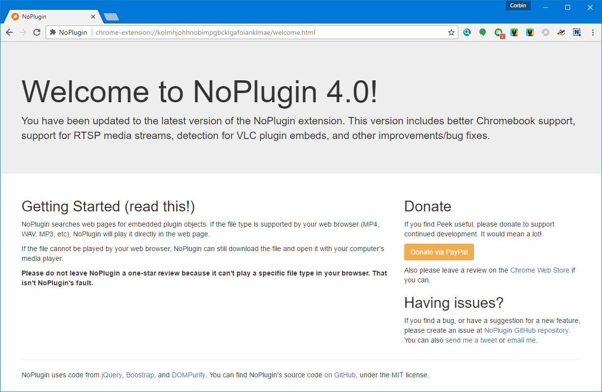

NoPlugin is a browser extension that allows you to view some plugin content in your browser, without the need for actual browser plugins. I’ve been working on version 4.0 for a few weeks now, and I’m excited to finally release it.
Firstly, NoPlugin 4.0 works much better on devices running Chrome OS. The extension did work before on Chromebooks, but I was unable to fully test it, and some of the included instructions were incorrect. Now that I have a shiny new Chromebook Flip, I was able to fix the problems.
Starting with version 4.0, NoPlugin will sanitize all plugin object data before processing it. This is done to prevent possible XSS attacks. I’m not aware of this happening to any user, but better safe than sorry.

There a few other minor improvements, such as support for RTSP media streams and detection for VLC plugin objects. NoPlugin 4.0 is rolling out now to Chrome users, and is in the review process for Opera and Firefox. Opera should approve it within a day or two, but Firefox users will have to wait a little longer.
Update: NoPlugin has been approved for Firefox! You can download it from the link below.
Download for Chrome
Download for Opera
Download for Firefox